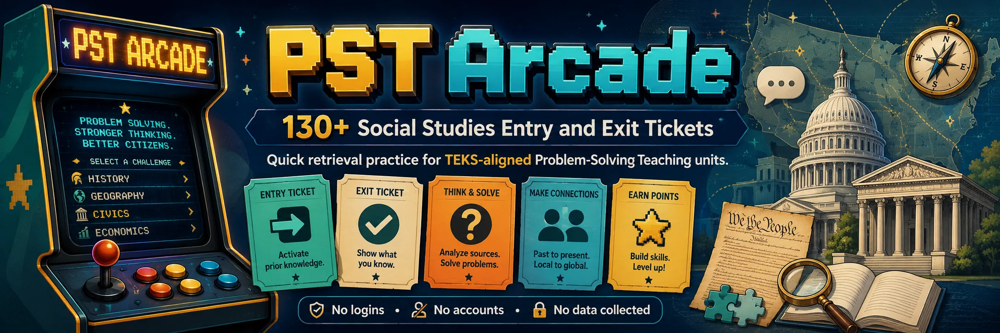

Quick, arcade-style entry and exit tickets for the units — a 1–2 minute retrieval-practice check before and after each learning phase. Testing yourself is high-leverage (effects of testing d ≈ 0.54–0.63; feedback d ≈ 0.62). Nothing is stored or sent — the score is just for you.
📊 See how every ticket maps to a unit, phase, TEKS, and strategy on the games correlation. New to the suite? Start at the Problem-Solving Teaching hub.
Aligned to (not reproduced from) 19 TAC Ch.113; effect sizes from Visible Learning MetaX. Self-contained — no logins, no accounts, no data collected or sent.